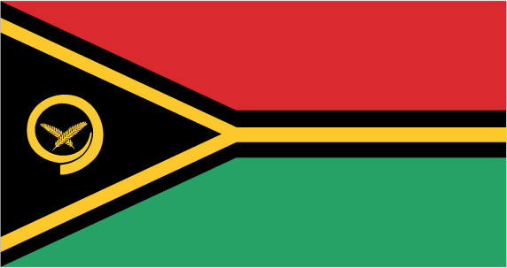
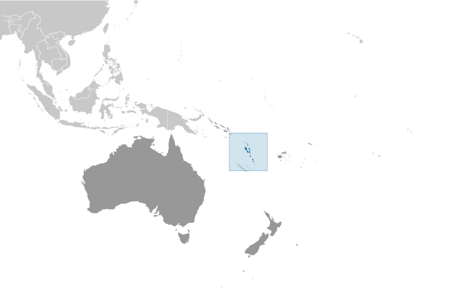
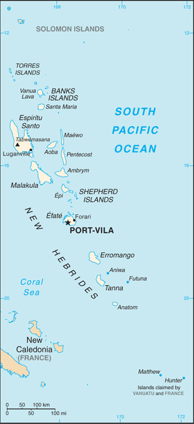

Australia-Oceania :: VANUATU
Introduction :: VANUATU
-
Multiple waves of colonizers, each speaking a distinct language, migrated to the New Hebrides in the millennia preceding European exploration in the 18th century. This settlement pattern accounts for the complex linguistic diversity found on the archipelago to this day. The British and French, who settled the New Hebrides in the 19th century, agreed in 1906 to an Anglo-French Condominium, which administered the islands until independence in 1980, when the new name of Vanuatu was adopted.
Geography :: VANUATU
-
Oceania, group of islands in the South Pacific Ocean, about three-quarters of the way from Hawaii to Australia16 00 S, 167 00 EOceaniatotal: 12,189 sq kmland: 12,189 sq kmwater: 0 sq kmnote: includes more than 80 islands, about 65 of which are inhabitedcountry comparison to the world: 163slightly larger than Connecticut0 km2,528 kmmeasured from claimed archipelagic baselinesterritorial sea: 12 nmcontiguous zone: 24 nmexclusive economic zone: 200 nmcontinental shelf: 200 nm or to the edge of the continental margintropical; moderated by southeast trade winds from May to October; moderate rainfall from November to April; may be affected by cyclones from December to Aprilmostly mountainous islands of volcanic origin; narrow coastal plainsmean elevation: NAelevation extremes: lowest point: Pacific Ocean 0 mhighest point: Tabwemasana 1,877 mmanganese, hardwood forests, fishagricultural land: 15.3%arable land 1.6%; permanent crops 10.3%; permanent pasture 3.4%forest: 36.1%other: 48.6% (2011 est.)0 sq km (2012)three-quarters of the population lives in rural areas; the urban populace lives primarily in two cities, Port-Vila and Lugenville; three largest islands - Espiritu Santo, Malakula, and Efate - accomodate over half of the populacetropical cyclones (January to April); volcanic eruption on Aoba (Ambae) island began on 27 November 2005, volcanism also causes minor earthquakes; tsunamisvolcanism: significant volcanic activity with multiple eruptions in recent years; Yasur (361 m), one of the world's most active volcanoes, has experienced continuous activity in recent centuries; other historically active volcanoes include, Aoba, Ambrym, Epi, Gaua, Kuwae, Lopevi, Suretamatai, and Traitor's Headmost of the population does not have access to a reliable supply of potable water; deforestationparty to: Antarctic-Marine Living Resources, Biodiversity, Climate Change, Climate Change-Kyoto Protocol, Desertification, Endangered Species, Law of the Sea, Marine Dumping, Ozone Layer Protection, Ship Pollution, Tropical Timber 94signed, but not ratified: none of the selected agreementsa Y-shaped chain of four main islands and 80 smaller islands; several of the islands have active volcanoes and there are several underwater volcanoes as well
People and Society :: VANUATU
-
282,814 (July 2017 est.)country comparison to the world: 182noun: Ni-Vanuatu (singular and plural)adjective: Ni-VanuatuNi-Vanuatu 97.6%, part Ni-Vanuatu 1.1%, other 1.3% (2009 est.)local languages (more than 100) 63.2%, Bislama (official; creole) 33.7%, English (official) 2%, French (official) 0.6%, other 0.5% (2009 est.)Protestant 70% (includes Presbyterian 27.9%, Anglican 15.1%, Seventh Day Adventist 12.5%, Assemblies of God 4.7%, Church of Christ 4.5%, Neil Thomas Ministry 3.1%, and Apostolic 2.2%), Roman Catholic 12.4%, customary beliefs 3.7% (including Jon Frum cargo cult), other 12.6%, none 1.1%, unspecified 0.2% (2009 est.)0-14 years: 35.51% (male 51,261/female 49,157)15-24 years: 20.02% (male 28,110/female 28,514)25-54 years: 35.06% (male 48,476/female 50,675)55-64 years: 5.42% (male 7,646/female 7,677)65 years and over: 3.99% (male 5,713/female 5,585) (2017 est.)total dependency ratio: 68.7youth dependency ratio: 61.6elderly dependency ratio: 7.1potential support ratio: 14.1 (2015 est.)total: 22 yearsmale: 21.6 yearsfemale: 22.4 years (2017 est.)country comparison to the world: 1791.85% (2017 est.)country comparison to the world: 5424 births/1,000 population (2017 est.)country comparison to the world: 574 deaths/1,000 population (2017 est.)country comparison to the world: 210-1.4 migrant(s)/1,000 population (2017 est.)country comparison to the world: 148three-quarters of the population lives in rural areas; the urban populace lives primarily in two cities, Port-Vila and Lugenville; three largest islands - Espiritu Santo, Malakula, and Efate - accomodate over half of the populaceurban population: 26.8% of total population (2017)rate of urbanization: 3.23% annual rate of change (2015-20 est.)PORT-VILA (capital) 53,000 (2014)at birth: 1.05 male(s)/female0-14 years: 1.04 male(s)/female15-24 years: 0.99 male(s)/female25-54 years: 0.96 male(s)/female55-64 years: 1 male(s)/female65 years and over: 1.04 male(s)/femaletotal population: 1 male(s)/female (2016 est.)78 deaths/100,000 live births (2015 est.)country comparison to the world: 81total: 14.4 deaths/1,000 live birthsmale: 15.4 deaths/1,000 live birthsfemale: 13.4 deaths/1,000 live births (2017 est.)country comparison to the world: 103total population: 73.7 yearsmale: 72.1 yearsfemale: 75.4 years (2017 est.)country comparison to the world: 1313.07 children born/woman (2017 est.)country comparison to the world: 5249% (2013)5% of GDP (2014)country comparison to the world: 1390.19 physicians/1,000 population (2012)1.8 beds/1,000 population (2008)improved:urban: 98.9% of populationrural: 92.9% of populationtotal: 94.5% of populationunimproved:urban: 1.1% of populationrural: 7.1% of populationtotal: 5.5% of population (2015 est.)improved:urban: 65.1% of populationrural: 55.4% of populationtotal: 57.9% of populationunimproved:urban: 34.9% of populationrural: 44.6% of populationtotal: 42.1% of population (2015 est.)NANANA25.2% (2016)country comparison to the world: 5210.7% (2013)country comparison to the world: 624.9% of GDP (2014)country comparison to the world: 79definition: age 15 and over can read and writetotal population: 85.2%male: 86.6%female: 83.8% (2015 est.)total: 10.6%male: 10.2%female: 11.2% (2009 est.)
Government :: VANUATU
-
conventional long form: Republic of Vanuatuconventional short form: Vanuatulocal long form: Ripablik blong Vanuatulocal short form: Vanuatuformer: New Hebridesetymology: derived from the words "vanua" (home or land) and "tu" (stand) that occur in several of the Austonesian languages spoken on the islands and which provide a meaning of "the land remains" but which also convey a sense of "independence" or "our land"parliamentary republicname: Port-Vila (on Efate)geographic coordinates: 17 44 S, 168 19 Etime difference: UTC+11 (16 hours ahead of Washington, DC, during Standard Time)6 provinces; Malampa, Penama, Sanma, Shefa, Tafea, Torba30 July 1980 (from France and the UK)Independence Day, 30 July (1980)effective 30 July 1980; amended several times, last in 2013 (2016)mixed legal system of English common law, French law, and customary lawhas not submitted an ICJ jurisdiction declaration; accepts ICCt jurisdictioncitizenship by birth: nocitizenship by descent only: both parents must be citizens of Vanuatu; in the case of only one parent, it must be the father who is a citizendual citizenship recognized: noresidency requirement for naturalization: 10 years18 years of age; universalchief of state: President Tallis Obed MOSES (since 6 July 2017)head of government: Prime Minister Charlot SALWAI (since 11 February 2016)cabinet: Council of Ministers appointed by the prime minister, responsible to parliamentelections/appointments: president indirectly elected by an electoral college consisting of Parliament and presidents of the 6 provinces; Vanuatu president serves a 5-year term; election last held on 17 September 2014 (next to be held in 2019); following legislative elections, the leader of the majority party or majority coalition usually elected prime minister by parliament from among its members; election for prime minister last held on 11 February 2016 (next to be held following general elections in 2020)election results: Baldwin LONSDALE (independent) died suddenly on 17 June 2017; Parliament elected Tallis Obed MOSES on 6 July 2017 with a 39 to 17 vote in the fourth round; Charlot SALWAI elected prime minister on 11 February 2016 with 46 votesdescription: unicameral Parliament (52 seats; members directly elected in multi-seat constituencies by simple majority vote to serve 4-year terms)note: the National Council of Chiefs advises on matters of culture and languageelections: last held on 22 January 2016 (next to be held in 2020)election results: percent of vote by party - NA; seats by party - VP 8, PPP 6, UMP 5, GJP 4, NUP 4, IG 3, GC 3, NAG 3, RMC 3, MPP 2, NIPDP 2, PSP 1, VLDP 1, VNP 1, VPDP 1, VRP 1, and independent 4; note - political party associations are fluidhighest court(s): Court of Appeal (consists of 2 or more judges of the Supreme Court designated by the chief justice); Supreme Court (consists of the chief justice and 6 puisne judges - 3 local and 3 expatriate)judge selection and term of office: Supreme Court chief justice appointed by the president after consultation with the prime minister and the leader of the opposition; other judges are appointed by the president on the advice of the Judicial Service Commission, a 4-member advisory body; judges appointed until age of retirementsubordinate courts: Magistrates Courts; Island CourtsGreens Confederation or GC [Moana CARCASSES Kalosil]Iauko Group or IG [Tony NARI]Land and Justice Party (Graon mo Jastis Pati) or GJP [Ralph REGENVANU]Melanesian Progressive Party or MPP [Barak SOPE]Nagriamel movement or NAG [Frankie STEVENS]Natatok Indigenous People's Democratic Party or (NATATOK) or NIPDP [Alfred Roland CARLOT]National United Party or NUP [Ham LINI]People's Progressive Party or PPP [Sato KILMAN]People's Service Party or PSP [Don KEN]Reunification of Movement for Change or RMC [Charlot SALWAI]Union of Moderate Parties or UMP [Serge VOHOR]Vanua'aku Pati (Our Land Party) or VP [Edward NATAPEI]Vanuatu Democratic Party [Maxime Carlot KORMAN]Vanuatu Liberal Democratic Party or VLDP [Tapangararua WILLIE]Vanuatu National Party or VNP [Issac HAMARILIU]Vanuatu National Development Party or VNDP [Robert Bohn SIKOL]Vanuatu Republican Party or VRP [Marcellino PIPITE]NAACP, ADB, AOSIS, C, FAO, G-77, IBRD, ICAO, ICRM, IDA, IFC, IFRCS, ILO, IMF, IMO, IMSO, IOC, IOM, ITU, ITUC (NGOs), MIGA, NAM, OAS (observer), OIF, OPCW, PIF, Sparteca, SPC, UN, UNCTAD, UNESCO, UNIDO, UNWTO, UPU, WCO, WFTU (NGOs), WHO, WIPO, WMO, WTOVanuatu does not have an embassy in the US; it does, however, have a Permanent Mission to the UNthe US does not have an embassy in Vanuatu; the US Ambassador to Papua New Guinea is accredited to Vanuatutwo equal horizontal bands of red (top) and green with a black isosceles triangle (based on the hoist side) all separated by a black-edged yellow stripe in the shape of a horizontal Y (the two points of the Y face the hoist side and enclose the triangle); centered in the triangle is a boar's tusk encircling two crossed namele fern fronds, all in yellow; red represents the blood of boars and men, as well as unity, green the richness of the islands, and black the ni-Vanuatu people; the yellow Y-shape - which reflects the pattern of the islands in the Pacific Ocean - symbolizes the light of the Gospel spreading through the islands; the boar's tusk is a symbol of prosperity frequently worn as a pendant on the islands; the fern fronds represent peacenote: one of several flags where a prominent component of the design reflects the shape of the country; other such flags are those of Bosnia and Herzegovina, Brazil, and Eritreaboar's tusk with crossed fern fronds; national colors: red, black, green, yellowname: "Yumi, Yumi, Yumi" (We, We, We)lyrics/music: Francois Vincent AYSSAVnote: adopted 1980; the anthem is written in Bislama, a Creole language that mixes Pidgin English and French
Economy :: VANUATU
-
This South Pacific island economy is based primarily on small-scale agriculture, which provides a living for about two-thirds of the population. Fishing, offshore financial services, and tourism, with nearly 350,000 visitors in 2016, are other mainstays of the economy. Tourism has struggled after Efate, the most populous and popular island for tourists, was damaged by Tropical Cyclone Pam in 2015. Ongoing infrastructure difficulties at Port Vila’s Bauerfield Airport have caused air travel disruptions, further hampering tourism numbers. Australia and New Zealand are the main source of tourists and foreign aid. A small light industry sector caters to the local market. Tax revenues come mainly from import duties. Mineral deposits are negligible; the country has no known petroleum deposits.Economic development is hindered by dependence on relatively few commodity exports, vulnerability to natural disasters, and long distances from main markets and between constituent islands. In response to foreign concerns, the government has promised to tighten regulation of its offshore financial center.Since 2002, the government has stepped up efforts to boost tourism through improved air connections, resort development, and cruise ship facilities. Agriculture, especially livestock farming, is a second target for growth.$740 million (2016 est.)$703 million (2015 est.)$684 million (2014 est.)note: data are in 2016 dollarscountry comparison to the world: 206$807 million (2016 est.)4% (2016 est.)1.6% (2015 est.)2.3% (2014 est.)country comparison to the world: 62$2,700 (2016 est.)$2,600 (2015 est.)$2,700 (2014 est.)note: data are in 2016 dollarscountry comparison to the world: 195household consumption: 59.7%government consumption: 17.6%investment in fixed capital: 29%investment in inventories: 1%exports of goods and services: 40.7%imports of goods and services: -48% (2016 est.)agriculture: 26.9%industry: 9%services: 64.2% (2016 est.)copra, coconuts, cocoa, coffee, taro, yams, fruits, vegetables; beef; fishfood and fish freezing, wood processing, meat canning4% (2016 est.)country comparison to the world: 58115,900 (2007 est.)country comparison to the world: 183agriculture: 65%industry: 5%services: 30% (2000 est.)1.7% (1999 est.)country comparison to the world: 11NA%lowest 10%: NA%highest 10%: NA%revenues: $205.6 millionexpenditures: $201 million (2016 est.)26.6% of GDP (2016 est.)country comparison to the world: 1070.6% of GDP (2016 est.)country comparison to the world: 3331.3% of GDP (2016 est.)25.6% of GDP (2015 est.)country comparison to the world: 158calendar year0.9% (2016 est.)2.4% (2015 est.)country comparison to the world: 8020% (31 December 2010)6% (31 December 2009)country comparison to the world: 62.95% (31 December 2016 est.)3.63% (31 December 2015 est.)country comparison to the world: 168$379.9 million (31 December 2016 est.)$320.9 million (31 December 2015 est.)country comparison to the world: 172$641 million (31 December 2016 est.)$588.7 million (31 December 2015 est.)country comparison to the world: 178$463.4 million (31 December 2016 est.)$477 million (31 December 2015 est.)country comparison to the world: 177$NA$-30 million (2016 est.)$-82.1 million (2015 est.)country comparison to the world: 72$53.5 million (2016 est.)$38.8 million (2015 est.)country comparison to the world: 203copra, beef, cocoa, timber, kava, coffeeEcuador 18.4%, Australia 13.8%, Venezuela 10.1%, US 9.8%, Japan 8.2%, UK 6.7%, France 5.7%, Hong Kong 5.2% (2016)$308.5 million (2016 est.)$307.9 million (2015 est.)country comparison to the world: 200machinery and equipment, foodstuffs, fuelsAustralia 27.8%, NZ 17.6%, China 10.5%, France 10%, Singapore 6.1%, Thailand 4.8% (2016)$267.4 million (31 December 2016 est.)$269.2 million (31 December 2015 est.)country comparison to the world: 155$182.5 million (31 December 2016 est.)$170.2 million (31 December 2015 est.)country comparison to the world: 190$535.9 million (31 December 2016 est.)$500.9 million (31 December 2015 est.)country comparison to the world: 122$22.4 million (31 December 2016 est.)$22.6 million (31 December 2015 est.)country comparison to the world: 109vatu (VUV) per US dollar -108.48 (2016 est.)108.48 (2015 est.)108.99 (2014 est.)97.07 (2013 est.)92.64 (2012 est.)
Energy :: VANUATU
-
population without electricity: 202,614electrification - total population: 27%electrification - urban areas: 55%electrification - rural areas: 18% (2012)55 million kWh (2015 est.)country comparison to the world: 20551.15 million kWh (2015 est.)country comparison to the world: 2030 kWh (2016 est.)country comparison to the world: 1770 kWh (2016 est.)country comparison to the world: 18033,000 kW (2015 est.)country comparison to the world: 20181.8% of total installed capacity (2015 est.)country comparison to the world: 830% of total installed capacity (2015 est.)country comparison to the world: 1530% of total installed capacity (2015 est.)country comparison to the world: 19318.2% of total installed capacity (2015 est.)country comparison to the world: 360 bbl/day (2016 est.)country comparison to the world: 1770 bbl/day (2014 est.)country comparison to the world: 1710 bbl/day (2014 est.)country comparison to the world: 1710 bbl (1 January 2017 es)country comparison to the world: 1750 bbl/day (2014 est.)country comparison to the world: 1821,000 bbl/day (2015 est.)country comparison to the world: 2050 bbl/day (2014 est.)country comparison to the world: 1851,008 bbl/day (2014 est.)country comparison to the world: 2000 cu m (2013 est.)country comparison to the world: 1770 cu m (2013 est.)country comparison to the world: 2160 cu m (2013 est.)country comparison to the world: 1580 cu m (2013 est.)country comparison to the world: 1640 cu m (1 January 2014 es)country comparison to the world: 179200,000 Mt (2013 est.)country comparison to the world: 199
Communications :: VANUATU
-
total subscriptions: 4,267subscriptions per 100 inhabitants: 2 (July 2016 est.)country comparison to the world: 207total: 192,167subscriptions per 100 inhabitants: 69 (July 2016 est.)country comparison to the world: 183general assessment: telecom services have progressed significantly in recent years; mobile phones are now the primary means of communication and more than 90% of the population is covered by a mobile networkdomestic: 2016 saw the launch of LTE services by Digicel and the introduction of rural satellite broadband services by Kacific; mobile phone use in some rural areas is constrained by electricity shortagesinternational: country code - 678; satellite earth station - 1 Intelsat (Pacific Ocean) (2016)1 state-owned TV station; multi-channel pay TV is available; state-owned Radio Vanuatu operates 2 radio stations; 2 privately owned radio broadcasters; programming from multiple international broadcasters is available (2008).vutotal: 66,613percent of population: 24.0% (July 2016 est.)country comparison to the world: 194
Transportation :: VANUATU
-
number of registered air carriers: 1inventory of registered aircraft operated by air carriers: 6annual passenger traffic on registered air carriers: 287,526annual freight traffic on registered air carriers: 1,510,732 mt-km (2015)YJ (2016)31 (2013)country comparison to the world: 114total: 32,438 to 3,047 m: 11,524 to 2,437 m: 1914 to 1,523 m: 1 (2013)total: 28914 to 1,523 m: 7under 914 m: 21 (2013)total: 1,070 kmpaved: 256 kmunpaved: 814 km (2000)country comparison to the world: 185total: 77by type: bulk carrier 38, cargo 8, chemical tanker 2, container 1, liquefied gas 2, passenger 1, refrigerated cargo 24, vehicle carrier 1foreign-owned: 72 (Belgium 1, Canada 5, China 1, Greece 3, Japan 39, Norway 1, Poland 9, Russia 7, Singapore 2, Taiwan 1, UAE 1, US 2) (2010)country comparison to the world: 59major seaport(s): Forari Bay, Luganville (Santo, Espiritu Santo), Port-Vila
Military and Security :: VANUATU
-
no regular military forces; Vanuatu Police Force (VPF), Vanuatu Mobile Force (VMF; includes Police Maritime Wing (PMW)) (2013)
Transnational Issues :: VANUATU
-
Matthew and Hunter Islands east of New Caledonia claimed by Vanuatu and France